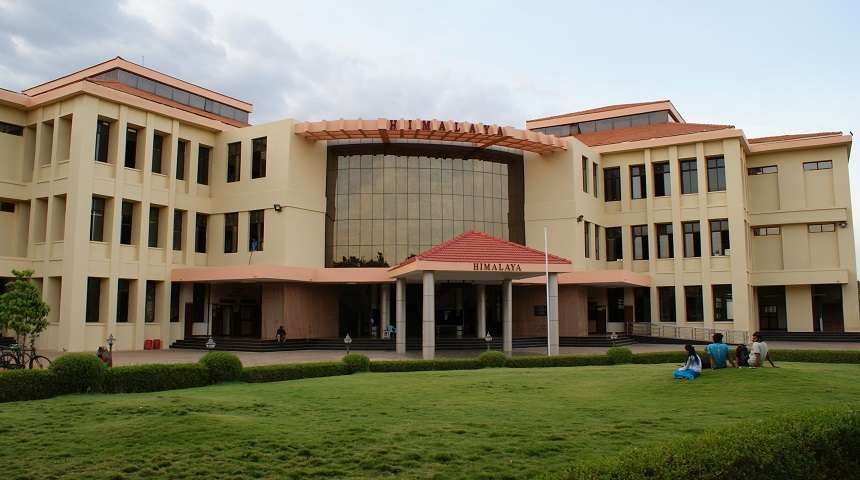

Engineering Institutes in India and abroad
India has one of the largest numbers of engineers in the world. In India, there are numerous engineering colleges imparting undergraduate and graduate
courses in engineering, applied engineering and sciences. The Indian Institutes of Technology (IITs), National Institutes of Technology (NITs) and CFTI's
like PEC Chandigarh, SLIET Longowal, BIT Mesra are autonomous public technical and research universities located in India.
Indian Institue Of Techonolgy

The Indian Institutes of Technology (IITs) has 23 centers located in Bhubaneswar, Bombay, Delhi,
Gandhinagar, Guwahati, Hyderabad, Indore, Jodhpur, Kanpur, Kharagpur, Madras, Mandi, Patna, Roorkee, Ropar, Dhanbad, Palakkad, Tirupati, Bhilai, Goa,
Jammu, Dharwad and Varanasi. All IITs enjoy the status of the Institutes of National Importance and are autonomous universities that draft their own
curricula. Many IITs are members of LAOTSE, an international network of universities in Europe and Asia. LAOTSE membership allows the IITs to exchange
students and senior scholars with universities in other countries.
Admission to undergraduate B.Tech and integrated M.Tech programs are through JEE Advanced (the Joint Entrance Examination Advanced) in which around 150,000
students appear annually out of which only around 11,032 get selected.
National Institute Of Technology(NIT)
 The National Institutes of Technology (NITs) are colleges of engineering and technology education in India. All NITs enjoy the status of the Institutes
of National Importance and are autonomous universities that draft their own curricula. They were originally called Regional Engineering Colleges (RECs).
In 2002, the Ministry of Human Resource Development, Government of India, decided to upgrade, in phases, all the original 17 RECs as NITs.
There are currently 31 NITs, with the inception of 10 new NITs in the year 2010 and another in 2015. The 31 NITs are located in Allahabad, Agartala,
Bhopal, Durgapur, Hamirpur, Kozhikode, Kurukshetra, Jalandhar, Jamshedpur, Jaipur, Nagpur, Patna, Raipur, Rourkela, Silchar, Srinagar, Surathkal, Surat,
Tiruchirappalli, Warangal, Yupia, New Delhi, Farmagudi, Imphal, Shillong, Aizawl, Dimapur, Karaikal, Ravangla, Srinagar and Tadepalligudem.
The National Institutes of Technology (NITs) are colleges of engineering and technology education in India. All NITs enjoy the status of the Institutes
of National Importance and are autonomous universities that draft their own curricula. They were originally called Regional Engineering Colleges (RECs).
In 2002, the Ministry of Human Resource Development, Government of India, decided to upgrade, in phases, all the original 17 RECs as NITs.
There are currently 31 NITs, with the inception of 10 new NITs in the year 2010 and another in 2015. The 31 NITs are located in Allahabad, Agartala,
Bhopal, Durgapur, Hamirpur, Kozhikode, Kurukshetra, Jalandhar, Jamshedpur, Jaipur, Nagpur, Patna, Raipur, Rourkela, Silchar, Srinagar, Surathkal, Surat,
Tiruchirappalli, Warangal, Yupia, New Delhi, Farmagudi, Imphal, Shillong, Aizawl, Dimapur, Karaikal, Ravangla, Srinagar and Tadepalligudem.
Other Institutions
The Indian Institutes of Information Technology (IIITs),[8] the International Institutes of Information Technology (IIITs), the Indian Institutes of
Engineering Science and Technology (IIESTs), Birla Institute of Technology and Science, Pilani (BITS Pilani), Jadavpur University, Punjab Engineering
College Chandigarh, DTU and NSUT are other notable engineering institutions in India
| S.No.1 | State | No. Of Engineering Colleges |
|---|
| 1 | Uttar Pradesh | 574 |
| 2 | Maharashtra | 334 |
| 3 | Tamil Nadu | 314 |
| 4 | Punjab | 302 |
| 5 | Rajastha | 281 |